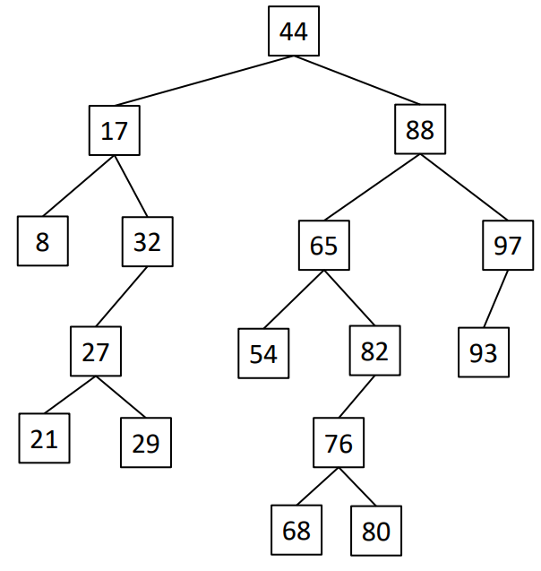

Lab 4: BST
Due Date and Submission Requirements
- Due Date: Friday, February 16th at 11:59 p.m.
- Partner Information: This is an individual assignment. You are allowed to collaborate with other students, but each student must submit their individual, independent solution.
- Submission Instructions: Upload your solution (BST.java), to the BrightSpace(D2L) Lab 4 Dropbox.
The goal of this lab is:
- Gain experience using a Binary Search Tree (BST)
Directions
In this lab, you will build some methods for a simple binary search tree that stores integers. You will continue using the code that we have been building in class (Feb 8 + 13), however I'd recommend downloading a fresh set of files below.
This is how the BST looks after a series of inserting nodes:

You should not modify the BSTDemo class or the Node class. You are allowed to modify the BST class and add any additional methods or instance fields (you probably will need add some things to the BST class). You will fill in the bodies for the following methods:
1. public void inOrder(Node n) . This method prints out the BST using inOrder traversal. Make sure that it matches the sample output below. Look at the slides (Slide 130) from Tuesday 2/13 if you are stuck.
2. public int getMin(). This method will return the minimum value in the BST. If there are
no values in the BST, return -1. You are NOT allowed to use breadth first, depth first, in order, post order, or pre order traversal
3. public int getMax(). This method will return the maximum value in the BST. If there are
no values in the BST, return -1. You are NOT allowed to use breadth first, depth first, in order, post order, or pre order traversal
4. public Node find(int value). This method will return the Node whose value equals
the input parameter value, if in fact that input parameter value exists in the BST. If the BST does
not contain the input parameter value, return null. You are NOT allowed to exhaustively search
the whole tree for the input parameter value. It must go from the root to the input parameter
value via the shortest path, just as our insert() method in class did. You are NOT allowed to use breadth first, depth first, in order, post order, or pre order traversal
Required Output
When you run your program, it should look exactly like output seen in in this screenshot .
Starting Code
Grading (10 points)
- 3 points - inOrder() is correct.
- 2 points - getMax() is correct.
- 2 points - getMin() is correct.
- 3 points - find() is correct.
NOTE: If your code does not compile, correctness cannot be verified and you won’t receive any
points for your code. Turn in code that compiles!
{kind=link}